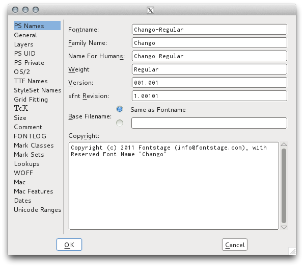

Font Info и Metadata
Element, Font Info
Окно Font Info повсеместно встречается в редакторах шрифтов, и FontForge точно соответствует спецификации OpenType. На первый взгляд это может показаться загадочным, но его использование может помочь лучше познакомиться с форматом OpenType, а, в свою очередь, чтение информации о формате OpenType делает диалоговое окно более доступным.

Нумерация версий
Разработчики программного обеспечения любят использовать Семантическое управление версиями для своих программ, и это также хорошая идея для шрифтов читателя. В каком-то смысле шрифты — это “API” для текста, позволяющий вызвать у читателей некоторые ассоциативные чувства.
ОСНОВНАЯ версия будет после полного редизайна. Сравнить Exo и Exo 2. Если есть документ, использующий Exo, не требуется переход к Exo 2, потому что ощущение, которое вызывается, ‘voice’ или ‘flavor,’ (незначительно) отличается. Добавление поддержки одного или нескольких новых скриптов, которые очень похожи по высоте, или значительного количества языков также может представлять собой КРУПНУЮ переработку, как и все остальное, что существенно меняет вертикальные или горизонтальные показатели. Однако, если создается дополнительный дизайн для двух шрифтов, возможно, лучше выпустить 2 или 3 семейства, в одном из которых каждый шрифт будет соответствующим образом масштабирован, а другой(ие) шрифт(ы) будет масштабироваться как вторичные шрифты для простого резервного набора многоязычных текстов.
МИНОРНОЙ версией будет все, что слегка меняет метрики, например, вертикальные метрики, горизонтальные боковые опоры или улучшенный кернинг, или вносит незначительные исправления в некоторые глифы, поскольку такие обновления приведут к перекомпоновке документов, использующих шрифт (хотя во многих случаях незаметно). Вот пример из “Roboto Rebooted: Почему Google обновляет свой шрифт, как и остальные свои продукты”:

Добавление всего нескольких или дюжины глифов к покрытию “complete” ранее запланированного набора символов или добавление поддержки еще нескольких языков, вероятно, НЕЗНАЧИТЕЛЬНО, особенно если это не меняет вертикальные показатели.
Изменением на уровне PATCH будет любое улучшение шрифта без изменения показателей или изменение дизайна глифа видимым образом, не влияющее на окончательный макет текста. В версии 1.001 fsType может не иметь значения 0 или не запускаться через Fontcrunch, и изменение обеих этих вещей в версии 1.0.1 не будет видно или ничего не будет перекомпоновано. К сожалению, третий номер версии PATCH недоступен в полях метаданных версии шрифта OpenType. Вместо этого увеличить номер версии MINOR для таких изменений в хинтировании или метаданных.
Кроме того, версия должна иметь не более трех десятичных знаков, а в файле TTX
это может быть представлено цифрой 5. Например, 2.001 является типичным и может
отображаться как 2.00099 в TTX XML.
Если выпускать свободные шрифты, функции GitHub Releases будут очень полезны.
Именование Семейств
Microsoft усердно работает над тем, чтобы программа, написанная для предыдущей версии Windows, продолжала работать в последних версиях, побуждая людей обновляться. Это означает, что базовая модель шрифтов TrueType, представленная в Windows 3, все еще существует, и Windows не поддерживает семейства шрифтов, содержащие более четырех основных стилей (обычный, курсив, жирный, полужирный курсив).
Для дизайнеров шрифтов это означает, что имена семейств шрифтов должны быть настроены таким образом, чтобы все шрифты можно было использовать во всех операционных системах. Формат OpenType позволяет это сделать, дополняя значения семейства и имени стиля значениями “Preferred Family Name” и “Preferred Style Name”, которые будут иметь приоритет в программном обеспечении, поддерживающем OpenType.
Таблица именования семейств в Документах Google основана на информации, предоставленной польским экспертом по шрифтам Адамом Твардочом и обсуждаемой в Fontlab форуме. Это заменяет OpenType пример спецификации .